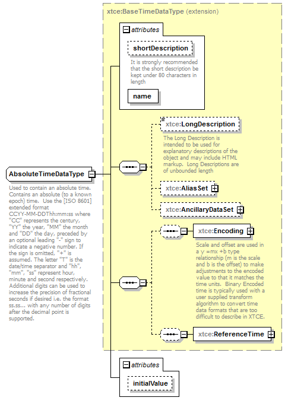

| diagram |  | ||||||||||||||||||||||||||
| namespace | http://www.omg.org/space/xtce | ||||||||||||||||||||||||||
| type | extension of xtce:BaseTimeDataType | ||||||||||||||||||||||||||
| properties |
|
||||||||||||||||||||||||||
| children | xtce:LongDescription xtce:AliasSet xtce:AncillaryDataSet xtce:Encoding xtce:ReferenceTime | ||||||||||||||||||||||||||
| used by |
|
||||||||||||||||||||||||||
| attributes |
|
||||||||||||||||||||||||||
| annotation |
|
||||||||||||||||||||||||||
| source | <complexType name="AbsoluteTimeDataType"> <annotation> <documentation xml:lang="en">Used to contain an absolute time. Contains an absolute (to a known epoch) time. Use the [ISO 8601] extended format CCYY-MM-DDThh:mm:ss where "CC" represents the century, "YY" the year, "MM" the month and "DD" the day, preceded by an optional leading "-" sign to indicate a negative number. If the sign is omitted, "+" is assumed. The letter "T" is the date/time separator and "hh", "mm", "ss" represent hour, minute and second respectively. Additional digits can be used to increase the precision of fractional seconds if desired i.e. the format ss.ss... with any number of digits after the decimal point is supported. </documentation> </annotation> <complexContent> <extension base="xtce:BaseTimeDataType"> <attribute name="initialValue" type="dateTime"/> </extension> </complexContent> </complexType> |
| type | dateTime |
| source | <attribute name="initialValue" type="dateTime"/> |